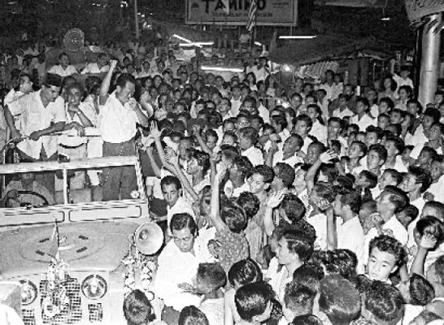

Warm crowds greeting me at Geylang Serai (a Malay area) on 9 September 1963. Mr Rahmat Yusak drove me in this Land Rover to every corner of Singapore (1962–63). After listening to hundreds of my speeches, he became my friend and strong supporter.